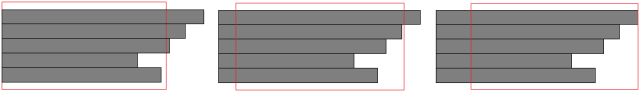

绘制文字和绘制图像或者几何图形略有不同。绘制文字时，必须考虑文字书写的起始点和文字块的对齐方式。起始点不见得是文字块的左上角，这取决于是在JAVA平台还是在安卓平台。文字块的对齐方式和在Word中的对齐方式略有不同。文字块的对齐方式是，给定一个长方形，文字块水平左对齐是指整个文字块的最左边和长方形的左边界对齐，文字块水平右对齐是指整个文字块的最右边和长方形的右边界对齐，文字块水平中对齐是指整个文字块的最左边和最右边之间的中点和长方形的左边界和右边界的中间线重合。长方形的宽度不见得要比文字块宽，同时，无论水平方向如何对齐，在现阶段，文字块内部每一行都是左对齐的。具体横对齐方式参见下图，其中灰色的表示文字，红色表示边界长方形。

图9.1： 文字的左中右横对齐方式。
文字块的纵向对齐方式则比较简单，文字块垂直上对齐是指整个文字块的最上边和边界长方形的上边界对齐，文字块垂直下对齐是指整个文字块的最下边和边界长方形的下边界对齐，文字块垂直中对齐是指整个文字块的最上边和最下边之间的中点和长方形的上边界和下边界的中间线重合。
MFP提供了两个函数分别用于根据文字块的起始点计算文字块的上下左右边界，以及根据设定的边界长方形（不见得一定要比文字块要大）计算文字块起始点的位置。这两个个函数为
|
函数名 |
函数帮助信息 |
|
calculate_text_boundary |
::mfp::graph_lib::draw::calculate_text_boundary(4) : calculate_text_boundary(display, string, text_origin, text_style)返回一个 文本块的边界长方形。边界长方形是一个4元素数组，第一个元素是左边界，第二个元素是上边界，第三个元素是宽度，第四个元素是高度。Calculate_text_boundary的第一个参数是display，它既可以是screen display，也可以是image display。第二个参数是文本块的文本，可以不止一行。第三个参数是文本块起始点的位置。这是一个两元素数组，第一个元素是起始点横坐标，第二个元素是起始点纵坐标。最后一个参数是可省略参数，用于定义文本的字体和大小。如果它被省略，则字体为系统缺省字体，大小为16。如果它不被省略，那么它必须是一个包含一个或者两个元素的数组。如果是一个元素的数组，那么该元素必须是一个正整数，代表字体的大小，而字体则为系统缺省字体。如果是包含两个元素的数组，那么第一个元素为字体的大小，第二个元素是基于字符串的字体的名字。一个本函数的例子为：calculate_text_boundary(display, txtStr, [108, 190], [27, "SimSun"])。 |
|
calculate_text_origin |
::mfp::graph_lib::draw::calculate_text_origin(8) : calculate_text_origin(display, string, boundary_rect_left_top, width, height, horAlign, verAlign, text_style)返回指定边界长方形和对齐方式的文本块的起始点。起始点是一个两元素（[x,y]）数组，将会被draw_text作为参数使用。Calculate_text_origin的第一个参数是display，它既可以是screen display，也可以是image display。第二个参数是文本块的文本，可以不止一行。第三个参数是边界长方形的左上角位置。这是一个两元素数组，第一个元素是左边界坐标，第二个元素是上边界坐标。第四个和第五个参数是边界长方形的宽度和高度。第六个参数是文本块的横向对齐方式。-1表示左对齐，0表示中对齐，1表示右对齐。第七个参数是文本块的纵向对齐方式。-1表示上对齐，0表示中对齐，1表示下对齐。最后一个参数是可省略参数，用于定义文本的字体和大小。如果它被省略，则字体为系统缺省字体，大小为16。如果它不被省略，那么它必须是一个包含一个或者两个元素的数组。如果是一个元素的数组，那么该元素必须是一个正整数，代表字体的大小，而字体则为系统缺省字体。如果是包含两个元素的数组，那么第一个元素为字体的大小，第二个元素是基于字符串的字体的名字。一个本函数的例子为：calculate_text_origin(display, "pei is " + peichoices[idx], [256, 72], peiBndrySize[0], peiBndrySize[1], horAlign, verAlign, [22])。 |
使用上述函数，用户可以自由地在屏幕任何地方绘制一个长方形，然后在其中填入文字，形成一个按钮。绘制文字的函数为draw_text(owner_info, display, string, origin_place, color, text_style, painting_extra_info)。这个函数为绘图事件调度器添加一个绘制文本块的事件。在绘图事件调度器调用这个绘制事件时，该事件将在display上绘制一个文本块。Draw_text的第一个参数是owner_info。Owner_info告诉绘图事件调度器谁拥有这个绘图事件。Owner_info可以是一个字符串，代表拥有者的名字，也可以是一个整数，代表拥有者的id，还可以是NULL，代表系统拥有该事件，更可以是一个包含两个元素的数组，其中第一个元素是一个代表拥有者名字的字符串，或者代表拥有者id的整数，或者代表系统的NULL，第二个元素是一个代表时标的浮点数，但要注意这里的时标不是真正的时标，该浮点数可以是任意值。该浮点数的值在清除本绘图事件时会发挥作用。第二个参数是display，也就是显示屏幕的句柄。第三个参数是基于字符串的文本块，它可以多于一行。第四个参数是文本块起始点的位置。这是一个两元素数组，第一个元素是起始点横坐标，第二个元素是起始点纵坐标。第五个参数是color，代表绘制使用的颜色，它是一个4个或3个元素的数组，如果是4个元素，就是[Alpha，R，G，B]，如果是3个元素，就是[R，G，B]，在该数组中，每一个元素的值都是从0到255。第六个参数是可省略参数，用于定义文本的字体和大小。如果它被省略，则字体为系统缺省字体，大小为16。如果它不被省略，那么它必须是一个包含一个或者两个元素的数组。如果是一个元素的数组，那么该元素必须是一个正整数，代表字体的大小，而字体则为系统缺省字体。如果是包含两个元素的数组，那么第一个元素为字体的大小，第二个元素是基于字符串的字体的名字。用户需要注意的是，这个参数必须和在调用draw_text函数之前调用calculate_text_origin时和在调用draw_text函数之后调用calculate_text_boundary时所使用的text_style一致，否则文本块的位置会出现偏差。最后一个参数是painting_extra_info，它告诉绘图事件调度器采用什么样的porterduff模式来绘制目标图像。这个参数是可选参数。porterduff模式内部机制比较复杂，建议开发者省略这个参数（也就是使用参数的缺省值）。如果用户想要详细了解painting extra info，可以参考set_porterduff_mode以及get_porterduff_mode的函数帮助信息。如果开发者想要详细了解porterduff模式，建议阅读相关的JAVA文档。Draw_text的例子包括draw_text("image", display, txtStr, [108, 190], [255, 255, 255], [10 + idx, font])以及draw_text("image", display, txtStr, [108, 190], [255, 255, 255], [idx * 2])。